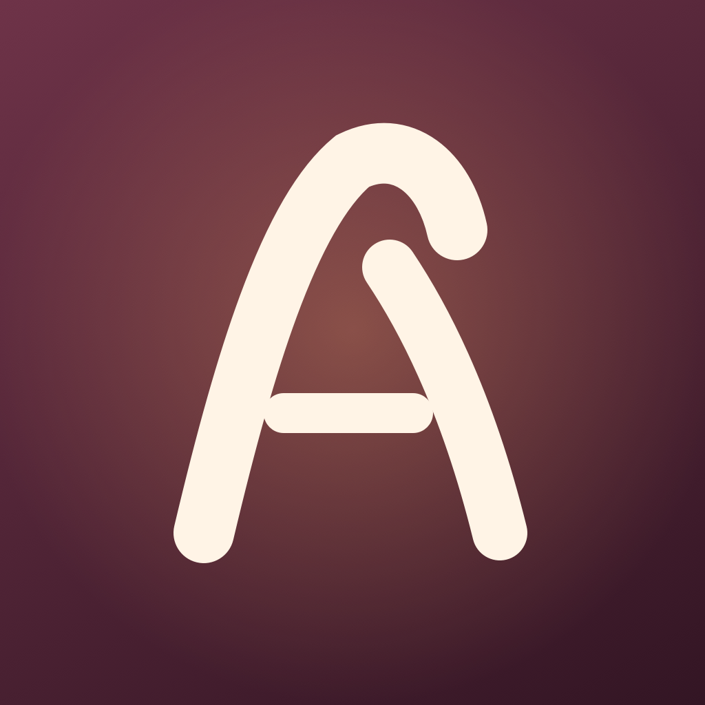
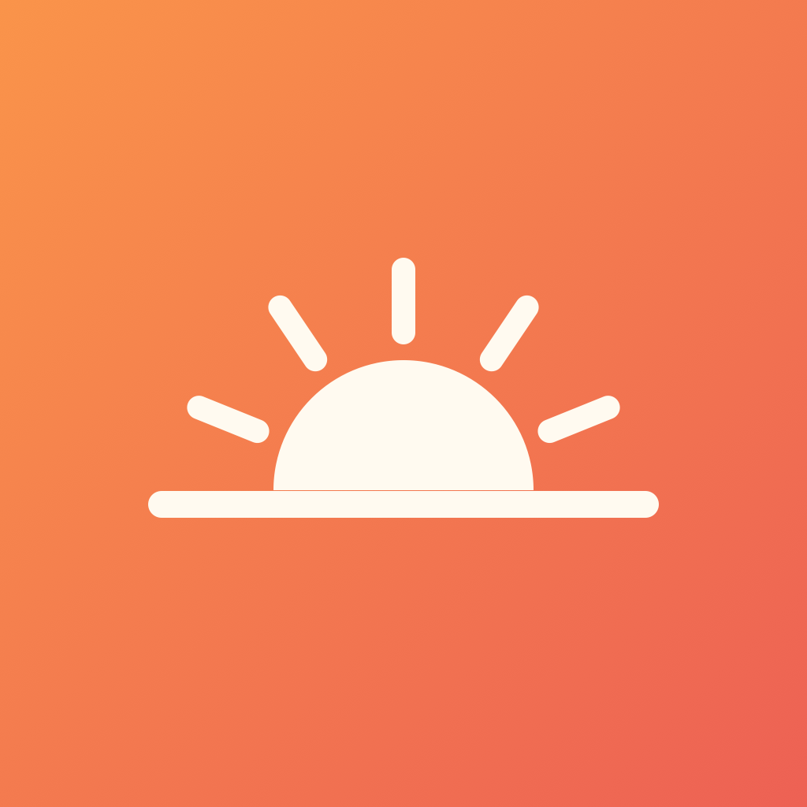

A small collection
Gentle apps for everyday life.
Quiet, personal iPhone apps built to sit with you on the hard days and the ordinary ones — no accounts, no ads, no tracking. Just something kind in your pocket.

Alta's Affirmations
Custom affirmations & lock screen widgets
Write the exact words you need, keep them close, and let gentle life-event packs and lock screen widgets hand them back to you when you least expect it.
- Custom-first affirmations, stored on your device
- 32 packs of tender, everyday encouragement
- Lock screen widgets that rotate on your terms
- Favorites, search, and daily reminders
- Apple Watch, dark mode, and share cards

Not Beaten
A gentle companion for recovery
One day at a time, three gratitudes a day. Count the days you've earned, keep a private journal, and start fresh after a hard day without ever losing what you've built.
- A day counter and milestone badges that are yours forever
- Daily gratitudes and a private feelings journal
- A kind, no-shame way to log a setback and begin again

Wait, Did I?
A calmer way to check less
For the "wait, did I lock the door?" moment. Build a quick walkthrough, tap each thing once as you check it, and let the app hold the answer, so a worry at work doesn't send you back home.
- Your own routines, cleared at day's end or on a timer
- A calm "all clear" the moment everything's confirmed
- A gentle pause that helps you re-check less over time
The through-line
Local by default. Yours to keep.
Every app here is built the same way: no accounts, no ads, no analytics, no tracking. What you write stays on your device. These are self-care and reflection tools — never a substitute for professional care.